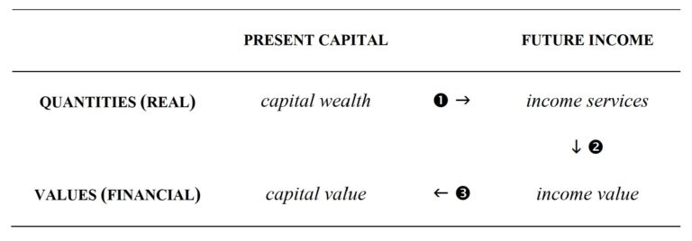
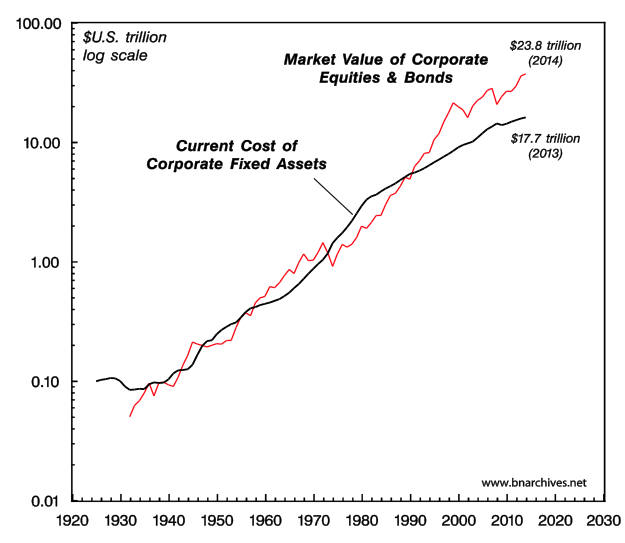
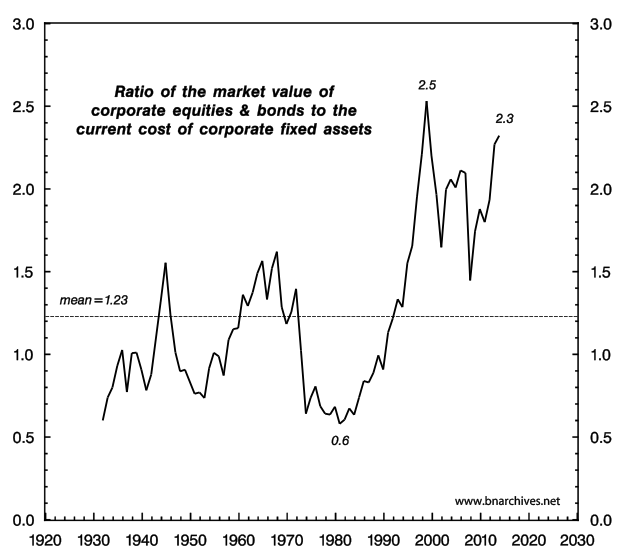
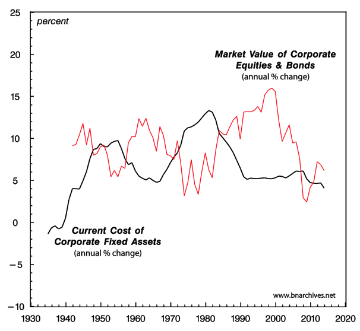
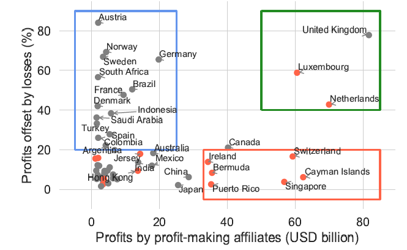

3 Accumulation (Growth)
Accumulation is elite accumulation!
Growth is a problem over and above capitalism. Like it not, growth is bound to come to an end, the question is how; and whether this will happen soon or too late to avert planetary disasters. There is too much superfluous activity under capitalism, which serves nothing else but the need of capitalists to extract surplus value and make profits.
Growth requires accumulation and accumulation comes with exploitation.
Like a snake biting its own tail, economic growth is limited because it is inevitably based on the unsustainable exploitation of reproductive labour and ecosystem provisioning.
If socialism means the end of exploitation, it also means the end of endless accumulation. Again: this is socialism without growth.
Degrowth from a standpoint of a purely rational approach to fundamentally shifting an economy that is currently heating the world to death, guaranteeing centuries of mass death and destruction. The only way to slow the rapid race to collapse civilization and accelerate extinctions is to stop the omnicidal political economy that rules the globe. Given the natural limits that thermodynamics and terrestrial ecologies impose on human economies and non-human populations, degrowth is inevitable: it’s just a matter of deciding whether human agency will play a positive, benevolent role in the process, or continue to maximize the chaos and violence involved.
Capitalism has always required “frontiers,” external to itself, from which to extract cheap nature and cheap labour. It should come as no surprise that such a system produces perpetual ecological crises and keeps most of the world’s population below subsistence levels of income. (Jason Hickel)
What we call “growth” is ultimately a process of enclosure, commodification, and elite accumulation. That anyone would regard this as a reasonable objective for the economy, or indeed as a proxy for human progress, is testament to the totalizing ideological power of capital. (Jason Hickel)
The apparent paradox of high and rising average standard of living despite a mounting environmental toll has come at a great cost to the stability of humanity’s medium- and long-term life-support system. In other words, humanity is running an ecological Ponzi scheme in which society robs nature and future generations to pay for boosting incomes in the short term
Bradshaw: Underestimating Avoiding Ghastly Future (pdf)
3.1 Differential Accumulation
Differential accumulation is an approach for analysing capitalist development and crisis, tying together mergers and acquisitions, stagflation and globalization as integral facets of accumulation. The concept has been developed by Jonathan Nitzan and Shimshon Bichler.
The concept of differential accumulation emphasizes the powerful drive by dominant capital groups to beat the average and exceed the normal rate of return. This concept is tied to a definition of capital as a social category rather than a material category (as seen by neo-classical thinkers). “Capitalism is not an ‘economic system,’ but a whole social order, and its principal category of capital must therefore have an ‘encompassing’ definition.”
…capitalization is a forward-looking process. What is being accumulated are claims on the future flow of profit. The pace of accumulation therefore depends on two factors: (a) the institutional arrangements affecting profit expectations; and (b) the normal rate of return used to discount them into their present value. The effect of rising industrial capacity on these factors is not only highly complex and possibly non-linear, but its direction can be positive as well as negative. But then if capital is not ‘tangible,’ how should its accumulation be measured? Surely, the mere augmentation of money values tells us little about power, particularly in the presence of inflation or deflation. The answer is rooted in the relative nature of power. The power of the absentee owner is the power to control part of the social process, and that becomes meaningful primarily against the power of other owners.
3.2 Real and Financial Capital
Fisher’s House of Mirrors
On the neoclassical side, the duality of real and financial capital was articulated a century ago by the American economist Irving Fisher. This was the beginning of a process that contemporary commentators refer to as financialization, and whose logical structure Fisher was one of the first theorists to systematize. Table 1 and the quote below it outline his framework:

The statement that “capital produces income” is true only in the physical sense; it is not true in the value sense. That is to say, capital-value does not produce income-value. On the contrary, income-value produces capital-value. . . . [W]hen capital and income are measured in value, their causal connection is the reverse of that which holds true when they are measured in quantity. The orchard produces the apples; but the value of the apples produces the value of the orchard. . . . We see, then, that present capital-wealth produces future income-services, but future income-value produces present capital-value. (Irving Fisher, The Rate of Interest, 1907, NY: The Macmillan Company, pp. 13-14, original emphases)
In this quote, Fisher draws three basic links: (1) the stock of capital goods, which economists consider as wealth, generates future income services; (2) future income services generate corresponding future income values; and (3) future income values, capitalized in the here and now, give capital its financial value. The real capital on the asset side of the balance sheet is made equal to the financial capital on the liabilities side.
Admittedly, this is merely the ideal state, the ultimate equilibrium a free, rational economy is bound to achieve. Sadly, though – and as neoclassicists are at great pain to admit – we are not there yet. In practice, the here-and-now economy is constantly upset by shocks, imperfections and distortions that, regrettably, cause finance to deviate from its proper, real value and equilibrium to remain a distant goal.
The benchmark is real or actual capital. This is the yardstick, the underlying quantity that finance supposedly matches or mismatches. At some point, be it at the beginning or the end of the process, the capitalized value of finance must equal the quantity of wealth over which it constitutes a claim. In other words, the entire exercise is built upon the material quantity of capital goods. The only problem is that nobody knows what this quantity is or how to measure it.
3.2.1 Cambridge Controversy
During the 1960s, there was a very important controversy in economics, pitting heterodox professors from Cambridge University in England against some of their orthodox counterparts at MIT in Cambridge, Massachusetts. The U.K. economists claimed that orthodox economics was built on a basic fallacy: it treated capital as having a definite quantity while, in fact, such a quantity cannot be shown to exist. Capital, they demonstrated, can rarely if ever be measured in its own “natural” material units. And their U.S. counterparts eventually agreed. Reluctantly, they conceded that real capital was merely a “parable.” Like the ever elusive God, you can speak about it, but, generally, you cannot quantify it.
This Cambridge Controversy, as it later came to be known, has since been buried and forgotten. The textbooks don’t mention it, most professors haven’t heard about it and certainly don’t teach it, and the unexposed students remain blissfully ignorant of it.[4] The reason for the hush-hush is not hard to understand: to accept that real capital has no definite quantity is to terminate modern economics as we know it. In order to avoid this fate, the dismal scientists have taken the anti-scientific route of keeping their skeletons in the closet. They have ignored their own conclusions, gradually erased the very debate from their curricula and syllabi and fortified the walls surrounding their academic religion to ward off the infidels.
3.2.2 Aggregation
The basic reason that real capital cannot be measured is aggregation. Capital has no “natural unit”: there is no simply way to compare and add up its components.
Utils and socially necessary abstract labour time (SNALT)
But the economists haven’t given up. Instead of measuring utils and SNALT directly, they go in reverse. God is revealed to us through his miracles, and the same, argue the economists, holds true for the fundamental quantities of economics: they reveal themselves to us through their prices. For a neoclassicist, a 1:2 price ratio between a Toyota factory and a BP oil rig means that the first entity has half the util quantity of the second, while for a classical Marxist this same price ratio is evidence that the SNALT quantity of the first entity is half that of the second.
This reverse solution is the bread and butter of all practical economics. It is a common procedure that all economists use and few, if any, question, let alone critique. It is employed by everyone, from official statisticians and government economists to Wall Street analysts and corporate strategists.
It doesn’t work – at least not in the way it is supposed to. The mismatch thesis claims that the quantity of financial capital deviates from and distorts the quantity of real capital. But as it turns out, the quantity of real capital – the thing that finance supposedly mismatches and distorts in the first place – is in fact totally nominal.
In every other science, this inability to measure the key category of the theory would be devastating (think of measuring Newton’s gravitation without mass or distance). But not in the science of economics.
Tobin’s Q

Tobin’s Q offers a sweeping measure of the financial-real mismatch. It computes, for every year, the ratio between the market value of corporations in the numerator and the replacement cost of their plant and equipment in the denominator. If finance matches reality, the two magnitudes are the same and Tobin’s Q will equal 1. If there is a mismatch, Tobin’s Q will exceed or fall short of 1.
The historical mean value of Tobin’s Q isn’t 1, but slightly above 1.2. Second, it demonstrates marked variations in Q, ranging from a low of 0.6 to a high of 2.5. These variations are not random, but rather cyclical and persistent.

Intangibles
The reason that capitalization tends to be larger than “real capital,” they say, is that fixed assets are only part of the picture. The other part is made of equally productive intangible assets.
Intangibles, many economists argue, have become more important since the 1980s’ onset of the “information revolution” and “knowledge economy” – exactly when Tobin’s Q started to soar. According to this view, corporations have accumulated more and more invisible assets in the form of improved technology, better organization, high-tech, synergy and other such knowledge-related blessings. These intangibles have in turn augmented the quantity of capital, and have therefore led to larger capitalization. Accountants, though, remain conservative, so most intangibles don’t get recorded as fixed assets on the balance sheet. And since the capitalized numerator of Tobin’s Q takes account of these intangibles while the fixed-asset denominator usually does not, we end up with a growing mismatch. By the mid-2000s, some guestimates suggested that intangibles have come to account for 80 per cent of all corporate assets – up from less than 20 per cent 30 years earlier.
Intangible capital is computed as a residual, deduced by subtracting from market capitalization the value of fixed assets. Now if we accept this method – as most economists do – we must also accept that intangible capital is a highly flexible creature, capable of expanding rapidly
Irrationality
So what do the economists do to bypass these implausibilities? They add irrationality. This have certainly loosened the grip of strictly “rational” neoclassical economics over matters financial. Nowadays, market capitalization is said to consist not of two components, but three: tangible assets, intangible assets and the “irrational” optimism and pessimism of investors. And it is this last component, many now believe, that explains why Tobin’s Q is so volatile.
Boom and Bust
During good times – that is, when real accumulation is high and rising – investors get excessively optimistic. Their exuberance causes them to bid up the prices of financial assets over and above the “true” value of the underlying real capital. Such overshooting can serve to explain, for example, the Asian boom of the mid-1990s, the high-tech boom of the late 1990s and the sub-prime boom of the mid-2000s. In this scenario, real capital soars, but financial capital, boosted by hyped optimism, soars even faster.
The same pattern, only in reverse, is said to unfold on the way down. Decelerating real accumulation causes investors to become excessively pessimistic, and that pessimism leads them to push down the value of financial assets faster than the decline of real accumulation. Instead of overshooting, we now have undershooting. And that undershooting, goes the argument, can explain why, during the Great Depression, when fixed assets contracted by only 20 per cent, the stock market fell by 70 per cent, and why, during the late 2000s, the stock market fell by over 50 per cent while the accumulation of fixed assets merely decelerated.

Figure is patently inconsistent with the fundamental duality of real and financial capital. We can perhaps concede that real capital does not have a material quantum, and then pretend that this quantum is proportionate to the market price of the underlying capital goods. We can perhaps accept that there are invisible assets that nobody can observe, yet believe that the know-all asset market can indirectly measure them for us, as a residual. And we can perhaps allow economic agents to be irrational, and then assume that their imperfect asset pricing is nonetheless bounded, oscillating around the “true” price of real capital. But it taxes credulity to observe that the accumulation of real and financial assets move in opposite directions, yet maintain that the latter movement derives from and reflects the former.
Present-day capitalists – or investors, as they are now known – don’t really care about “real capital.” They are indifferent to means of production, labour and knowledge. They do not lose sleep over individual rationality and market efficiency. And they can live with both “free markets” and “government intervention.” The only thing they do care about is their financial capitalization. This is their “Moses and the prophets.” The rest is just means to an end.
3.2.3 Political Economy
The promise of classical political economy, and later of economics, was to explain and justify the rule of capital: to show how capitalists, while pursuing their own pecuniary interests, propel the rest of society forward. The accumulation of capital values, the economists explained, goes hand in hand with the amassment of “real” means of production, and therefore with the growth of production, employment, knowledge, rationality, efficiency and laissez faire. But, then, if the U.S. case is representative and the growth rates of capitalization and “real capital” move not together but inversely, the interests of the capitalist rulers are pitted against those of society. And if that is indeed the case, what’s the use of economics?
When capital first emerged in the European burgs of the late Middle Ages, it seemed like a highly promising startup: it counteracted the stagnation and violence of the ancien régime with the promise of dynamism, enlightenment and prosperity, and it replaced the theological sorcery of the church with an open, transparent and easy-to-understand logic. But once capital took over the commanding heights of society, this stark difference began to blur. The inner workings of capital became increasingly opaque: its ups and downs appeared difficult to decipher, its crises seemed mysterious, menacing and hard to manage, and its very nature and definition grew more slippery and harder to grasp.
Political economy – the first science of society – attempted to articulate the new order of capital. In this sense, it was the science of capital. The rule of capital emerged and consolidated together with modern science, and the methods of political economy developed hand in hand with those of physics, chemistry, mathematics and statistics. During the seventeenth century, the scientific revolution, along with the processes of urbanization, the shifting of production from agriculture to manufacturing and the development of new technologies, gave rise to a mechanical worldview, a novel secular cosmology whose intellectual architects promoted as the harbinger of freedom and progress. And it was this new mechanical cosmology – itself partly the outgrowth of capitalism – that political economists were trying to fit capital into.
Their attempts to marry the logic of accumulation with the mechanized laws of the cosmos are imprinted all over classical political economy and the social sciences it later gave birth to, and they are particularly evident in the various theories of capital. Quantitative reasoning and compact equations, Newtonian calculus and forces, the conservation of matter and energy, the imposition of probability and statistics on uncertainty – these and similar methods have all been incorporated, metaphorically or directly, into the study of capitalism and accumulation.
But as we have seen in this paper, over the past century the marriage has fallen apart. The modern disciplines of economics and finance overflow with highly complex models, complete with the most up-to-date statistical methods, computer software and loads of data – yet their ability to explain, let alone justify, the world of capital is now limited at best. Their basic categories are often logically unsound and empirically unworkable, and even after being massively patched up with ad hoc assumptions and circular inversions, they still manage to generate huge “residuals” and unobservable “measures of ignorance.”
In this sense, humanity today finds itself in a situation not unlike the one prevailing in sixteenth-century Europe, when feudalism was finally giving way to capitalism and the closed, geocentric world of the Church was just about to succumb to the secular, open-ended universe of science. The contemporary doctrine of capitalism, increasingly out of tune with reality, is now risking a fate similar to that of its feudal-Christian predecessor. Mounting global challenges – from overpopulation and environmental destruction, through climate change and peak energy, to the loss of autonomy and the risk of social disintegration – cannot be handled by a pseudo-science that cannot define its main categories and whose principal explanatory tool is “distortions.” You cannot build an entire social cosmology on the assumptions of individual rationality, equilibrium and perfect markets – and then blame the failures of this cosmology on irrationality, disequilibrium and imperfections. In science, these excuses and blame-shifting are tantamount to self-refutation.
3.2.4 Post-capitalist Society
What we need now are not better tools, more accurate modelling and improved data, but a different way of thinking altogether, a totally new cosmology for the post-capitalist age.
3.3 Profit-shifting
Garcia-Bernando
Multinational corporations (MNCs) avoid taxes by shifting their profits from countries where real activity takes place towards tax havens, depriving governments worldwide of billions of tax revenue. Earlier research investigating the scale and distribution of profit shifting has faced methodological and data challenges, both of which we address. First, we propose a logarithmic function to model the extremely non-linear relationship between the location of profits and tax rates faced by MNCs at those locations – that is, the extreme concentration of profits without corresponding economic activity in a small number of low-tax jurisdictions. We show that the logarithmic model allows for a more accurate identification of profit shifting than linear and quadratic models. Second, we apply the logarithmic model to newly available country-by-country reporting data for large MNCs – this provides information on the activities of large MNCs, including for the first time many low- and lower-middle-income countries.
We estimate that MNCs shifted US$1 trillion of profits to tax havens in 2016, which implies approximately US$200-300 billion in tax revenue losses worldwide. MNCs headquartered in the United States and Bermuda are the most aggressive at shifting profits towards tax havens, while MNCs headquartered in India, China, Mexico and South Africa the least. We establish which countries gain and lose most from profit shifting: the Cayman Islands, Luxembourg, Bermuda, Hong Kong and the Netherlands are among the most important tax havens, whereas low- and lower-middle-income countries tend to lose more tax revenue relative to their total tax revenue. Our findings thus support the arguments of low- and lower-middle-income countries that they should be represented on an equal footing during international corporate tax reform debates.

Figure: The total profits made by profit-making affiliates is plotted against the percentage of profits offset by losses. Three types of countries are highlighted with boxes. In red are ‘profit centres,’ reporting very high profits not offset by losses. In green are ‘coordination centres’ (or conduits), reporting very high profits offset by losses. In blue are origin countries, reporting profits offset by losses. Only countries reporting at least US$10 billion profits are reported, the USA (profits of US$1,310 and offset ratio of 10% is excluded). Countries in red exhibit profitabilities above US$100,000 per employee.
3.4 Steady-State Capitalism
Lianos
The increasing intensity of the environmental problems that we face as a global community for the last fifty years has led to the development of several important ideas and proposals regarding the systemic changes that may be introduced in order to reverse the existing tendencies. Most prominent among them are the Steady-State Economy (Daly, 1972), the Green Growth Economy or Green Economy (OECD, 2015, 2011; UN, 2012), the ideas of Degrowth (Hickel and Kallis, 2020; Kallis, 2011; Kallis et al., 2012), of Ecosocialism (Kovel and Löwy, 1991; Löwy, 2018) and of Ecomodernism (Asafu-Adjaye et al., 2015).
The Green Growth Economy and Ecomodernism offer ideas and proposals which, independently of their effectiveness, can be applied in the presently existing socio-economic system in most countries, i.e. within the institutions of capitalism. For the ideas of degrowth and ecosocialism to be applied it would require important institutional changes, more so in the case of ecosocialism. For ecosocialists the prosperity of human society and the health of the environment will coincide with the socialist transformation of society. For degrowth the required changes are not clearly delineated although the advocates of degrowth speak of non-violent and democratic transition beyond capitalism.
Daly
Can a steady-state economy be capitalist or does it imply major institutional changes? This question was discussed ten years ago and when Herman Daly, the best known advocate of the steady-state economy, was challenged by Richard Smith, replied “I have never used that term, always speaking of steady-state economy, which in my view is something different from capitalism and socialism” (Daly, 2010). Apparently, Daly believes that the imposition of constraints he introduces on population size, on the throughput of resources, and on income inequality is sufficient to change the nature of capitalism, even though he keeps the market mechanism for allocative purposes.
Critics of the steady-state idea (Smith, 2010; Trainer, 2016) argue that steady-state and capitalism are not compatible. If an economy is steady-state it cannot be capitalist and vice versa. This is a result of the “growth imperative” which is built on the foundations of capitalism. Lawn (2011), on the other hand, argues that capitalism can exist in a variety of forms and the steady-state economy introduces institutions that can make steady-state capitalism “workable and capable of releasing humanity from consumerism and its current growth addiction” (p. 24). In this paper we intend to discuss this question further and to show not only that a steady- state economy, with the constraints imposed by Daly, can be capitalist, but also that a steady- state economy is possible, and under certain conditions, preferable in socialism.
The steady-state economy is not a new idea. It was developed by classical economists under different circumstances and it was called a stationary state (Mill, 1885). In this model the size of population depends on the difference between the natural price of labor (minimum of subsistence) and the market price of labor. If the market price exceeds the natural price population will increase, and if the opposite occurs population will decline. In the long run, population will stabilize at its maximum when market and natural prices are equal (Ricardo, 1971). That requirement is the same as Daly’s constant population. The need for a constant flow of throughput was not necessary as there was no concern about ecological problems. With constant population and constant technology, in the long-run this model leads to zero profits, and constant stock of capital. William Baumol (1951) calls this model the “magnificent dynamics” of the early classical school. Therefore, capitalism can exist and operate with zero profits and consequently without capital accumulation.
The question regarding the compatibility of a steady-state economy and capitalism has been asked in the recent past by Smith (2010) in a critique of Daly’s version of steady-state economy and his answer is in the negative. His answer is based on a brief analysis of three characteristics of capitalism, i.e. that producers are dependent on the market, that competition is the engine of economic development and that the law of survival in the marketplace is “grow or die.” In short, the growth imperative is a law of nature in capitalism.
The same conclusion has been reached by Binswanger (2009) who shows that capitalist economies need to grow because otherwise firms will not be able to realize profits. According to him the simulation results of his model illustrate the growth imperative of capitalism. Similarly, according to Gordon and Rosenthal (2003) growth in capitalism is not just desirable, it is necessary for the future survival for each individual capitalist firm and for the system as a whole. Also, Li (2007) concludes that an a non-growing economy implies that the rate of profit will fall to zero, and therefore a steady-state economy, i.e. a zero growth economy, is not 1 compatible with capitalism, i.e. a system based on the pursuit of profit.
Finally, Blauwhof (2012) using Marxian terminology and an expanded reproduction scheme explains that if the economy cannot grow the surplus cannot be invested and can only be consumed or wasted. He adds that capitalists may have ways to raise the profit rate, such as those we see in the real world (wage cuts, avoidance of taxes, state subsidies) but there are limits to these and therefore it is unavoidable that the rate of profit will fall and approximate zero. The conclusion is that a steady-state economy cannot be capitalist. From the point of view of the history of economic thought it is interesting to note that the Marxian expanded reproduction scheme has found its modern expression within Keynesian economics in Domar’s growth model. It has been shown (Lianos, 1979) that aside from terminological differences Marx’s expanded reproduction scheme and Domar’s growth model are conceptually and mathematically the same. The conclusion derived from Domar’s model is that a capitalist economy cannot stand still. If it does not grow it must decline.
Lianos (2021) Is Steady-State Possible? (RWER) (pdf)
A failed growth economy and a steady-state economy are not the same thing; they are the very different alternatives we face. The Earth as a whole is approximately a steady state. Neither the surface nor the mass of the earth is growing or shrinking; the inflow of radiant energy to the Earth is equal to the outflow; and material imports from space are roughly equal to exports (both negligible). None of this means that the earth is static—a great deal of qualitative change can happen inside a steady state, and certainly has happened on Earth. The most important change in recent times has been the enormous growth of one subsystem of the Earth, namely the economy, relative to the total system, the ecosphere.
The closer the economy approaches the scale of the whole Earth the more it will have to conform to the physical behavior mode of the Earth. That behavior mode is a steady state—a system that permits qualitative development but not aggregate quantitative growth. Growth is more of the same stuff; development is the same amount of better stuff (or at least different stuff). The remaining natural world no longer is able to provide the sources and sinks for the metabolic throughput necessary to sustain the existing oversized economy—much less a growing one.
The economy must conform to the rules of a steady state—seek qualitative development, but stop aggregate quantitative growth.
We have lived for 200 years in a growth economy. That makes it hard to imagine what a steady-state economy (SSE) would be like, even though for most of our history mankind has lived in an economy in which annual growth was negligible.
We have to attempt a SSE because we cannot continue growing, and in fact so-called “economic” growth already has become uneconomic. The growth economy is failing.
The quantitative expansion of the economic subsystem increases environmental and social costs faster than production benefits, making us poorer not richer
The classical steady state takes the biophysical dimensions— population and capital stock (all durable producer and consumer goods)— as given and adapts technology and tastes to these objective conditions. The neoclassical “steady state” (proportional growth of capital stock and population) takes tastes and technology as given and adapts by growth in biophysical dimensions, since it considers wants as unlimited, and technology as powerful enough to make the world effectively infinite. At a more profound level the classical view is that man is a creature who must ultimately adapt to the limits (finitude, entropy, ecological interdependence) of the Creation of which he is a part. The neoclassical view is that man, the creator, will surpass all limits and remake Creation to suit his subjective individualistic preferences, which are considered the root of all value. In the end economics is religion.
Following Mill we might define a SSE as an economy with constant population and constant stock of capital, maintained by a low rate of throughput that is within the regenerative and assimilative capacities of the ecosystem.
Alternatively, and more operationally, we might define the SSE in terms of a constant flow of throughput at a sustainable (low) level, with population and capital stock free to adjust to whatever size can be maintained by the constant throughput that begins with depletion of low-entropy resources and ends with pollution by high-entropy wastes.
How could we limit throughput, and thus indirectly limit stocks of capital and people in a SSE? Since depletion is spatially more concentrated than pollution the main controls should be at the depletion or input end. Raising resource prices at the depletion end will indirectly limit pollution, and force greater efficiency at all upstream stages of production. A cap-auction-trade system for depletion of basic resources, especially fossil fuels, could accomplish a lot, as could ecological tax reform.
The SSE will also require a “demographic transition” in populations of products towards longer-lived, more durable goods, maintained by lower rates of throughput. A population of 1000 cars that last 10 years requires new production of 100 cars per year. If more durable cars are made to last 20 years then we need new production of only 50 cars per year. To see the latter as in improvement requires a change in perspective from emphasizing production as benefit to emphasizing production as a cost of maintenance. The idea that production is a maintenance cost to be minimized is strange to most economists. Shifting taxes from value added to throughput would promote this minimizing effort.
Goods that are by nature non-rival, and should be freed from illegitimate enclosure by the price system. I refer especially to knowledge. Knowledge, unlike throughput, is not divided in the sharing, but multiplied. Once knowledge exists, the opportunity cost of sharing it is zero and its allocative price should be zero. International development aid should more and more take the form of freely and actively shared knowledge, along with small grants, and less and less the form of large interest-bearing loans.
What would happen to the interest rate in a SSE? Would it not fall to zero without growth? Not likely, because capital would still be scarce, there would still be a positive time preference, and the value of total production may still increase without growth in physical throughput—as a result of qualitative development. Investment in qualitative improvement may yield a value increase out of which interest could be paid. However, the productivity of capitalwould surely be less without throughput growth, so one would expect low interest rates in a SSE, though not a zero rate.
Can a SSE maintain full employment? A tough question, but in fairness one must also ask if full employment is achievable in a growth economy driven by free trade, off-shoring practices, easy immigration of cheap labor, and widespread automation? In a SSE maintenance and repair become more important. Being more labor intensive than new production and relatively protected from off-shoring, these services may provide more employment. Yet a more radical rethinking of how people earn income may be required. If automation and off-shoring of jobs increase profits but not wages, then the principle of distributing income through jobs becomes less tenable. A practical solution (in addition to slowing automation and off-shoring) may be to have wider participation in the ownership of businesses, so that individuals earn income through their share of the business instead of through fulltime employment. Also the gains from technical progress should be taken in the form of more leisure rather than more production—a long expected but under-realized possibility.
What sort of tax system would best fit a SSE? Ecological tax reform, already mentioned, suggests shifting the tax base away from value added (income earned by labor and capital), and on to “that to which value is added,” namely the throughput flow, preferably at the depletion end (at the mine-mouth or well-head, the point of “severance” from the ground). Many states have severance taxes. Taxing the origin and narrowest point in the throughput flow induces more efficient resource use in production as well as consumption, and facilitates monitoring and collection.
Taxing what we want less of (depletion and pollution), and ceasing to tax what we want more of (income, value added) would seem reasonable—as the bumper sticker puts it, “tax bads, not goods.” The shift could be revenue neutral and gradual.
Could a SSE support the enormous superstructure of finance built around future growth expectations? Probably not, since interest rates and growth rates would be low. Investment would be mainly for replacement and qualitative improvement. There would likely be a healthy shrinkage of the enormous pyramid of debt that is precariously balanced atop the real economy, threatening to crash. Additionally the SSE could benefit from a move away from our fractional reserve banking system toward 100% reserve requirements.
A SSE should not have a system of national income accounts, GDP, in which nothing is ever subtracted. Ideally we should have two accounts, one that measures the benefits of physical growth in scale, and one that measures the costs of that growth. Our policy should be to stop growing where marginal costs equal marginal benefits. Or if we want to maintain the single national income concept we should adopt Nobel laureate economist J. R. Hicks’ concept of income, namely, the maximum amount that a community can consume in a year, and still be able to produce and consume the same amount next year. In other words, income is the maximum that can be consumed while keeping productive capacity (capital) intact.
Any consumption of capital, manmade or natural, must be subtracted in the calculation of income. Also we must stop the asymmetry of adding to GDP the production of anti-bads without first having subtracted the generation of the bads that made the anti-bads necessary. Note that Hicks’ conception of income is sustainable by definition. National accounts in a sustainable economy should try to approximate Hicksian income and abandon GDP.
While these transitional policies will appear radical to many, it is worth remembering that, in addition to being amenable to gradual application, they are based on the conservative institutions of private property and decentralized market allocation. They simply recognize that private property loses its legitimacy if too unequally distributed, and that markets lose their legitimacy if prices do not tell the whole truth about costs. In addition, the macro-economy becomes an absurdity if its scale is structurally required to grow beyond the biophysical limits of the Earth. And well before that radical physical limit we are encountering the conservative economic limit in which extra costs of growth become greater than the extra benefits.
Herman Daly (2008) Steady State Economy (Sustainable Development Commision) (pdf)
Binswanger
This paper postulates the existence of a growth imperative in capitalist economies. The argument is based on a simple circular flow model of a pure credit economy, where production takes time. In this economy, positive growth rates are necessary in the long run in order to enable firms to make profits in the aggregate. If the growth rate falls below a certain positive threshold level, firms will make losses. Under these circumstances, they will go out of business, which moves the whole economy into a downward spiral. According to the model presented, capitalist economies can either grow (at a sufficiently high rate) or shrink if the growth rate falls below the positive threshold level. Therefore, a zero growth economy is not feasible in the long run.